Instructions
Annotation Standard
There are 6 types of lane dividing marks: single yellow, double yellow, single white, double white, road curb and crosswalk. And they have two attributes: 1. full or dashed; 2. parallel or vertical.
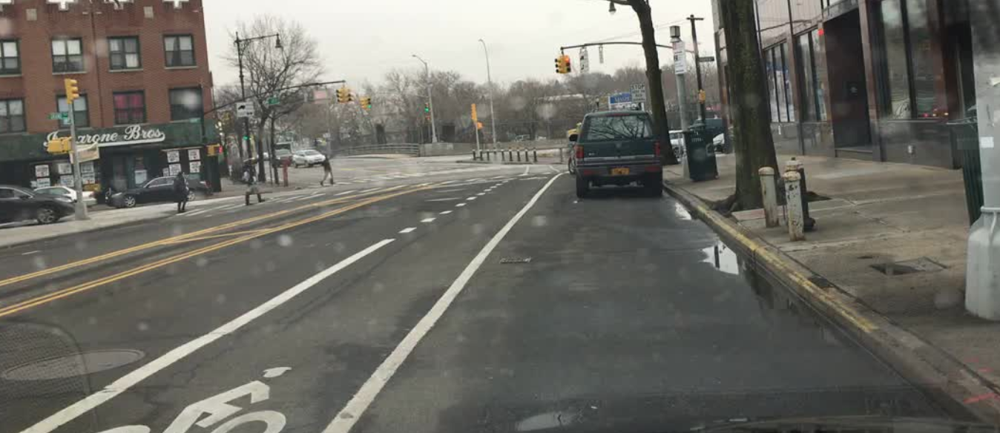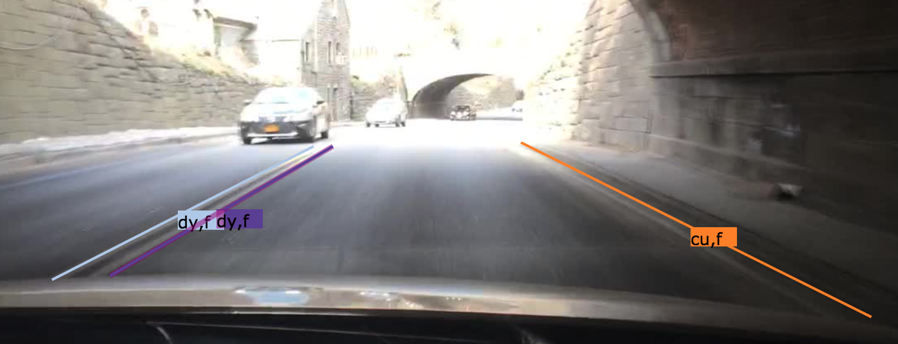
As for the second attribute, to define the direction of the lane (parallel or vertical), we introduce two directions: the direction of its tangent line and the direction of the cars driving onto it. If the two directions are the same, then the attribute is "parallel". Or it is "vertical".
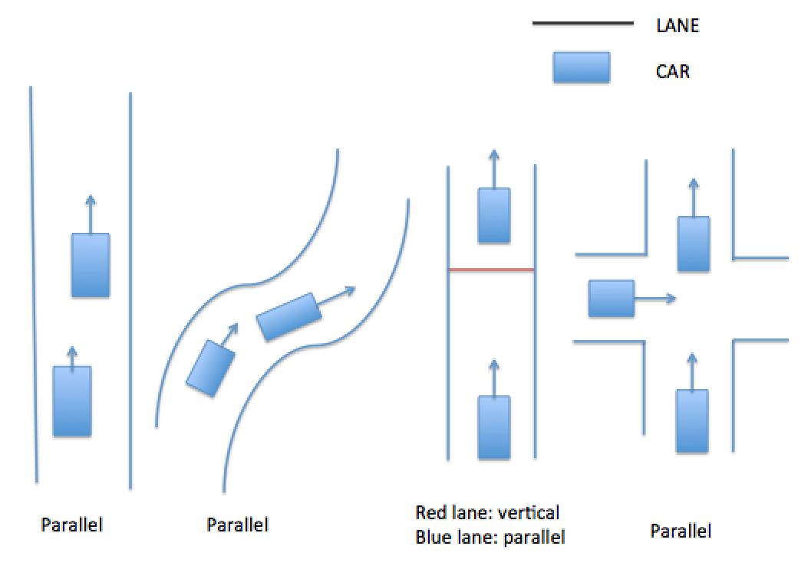
Paralleled lanes:
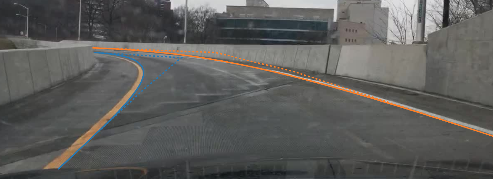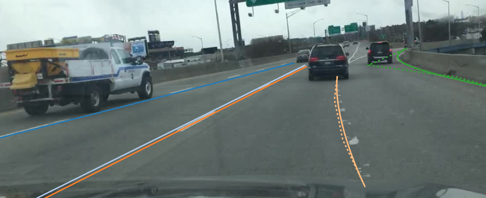Vertical lanes:
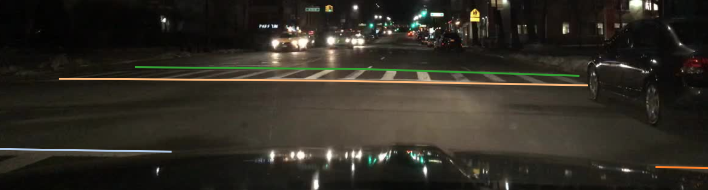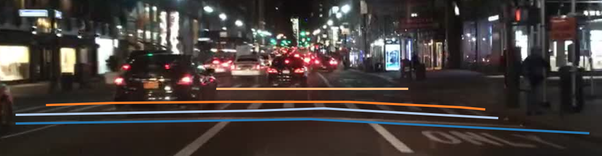So you should choose the categories and attributes of these different lane marks. And what's more, if its width is not negligible, we should annotate both sides. In most cases, the lane marks are wide enough to be annotate for two sides. For example:
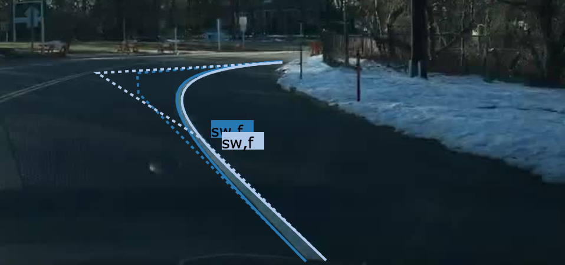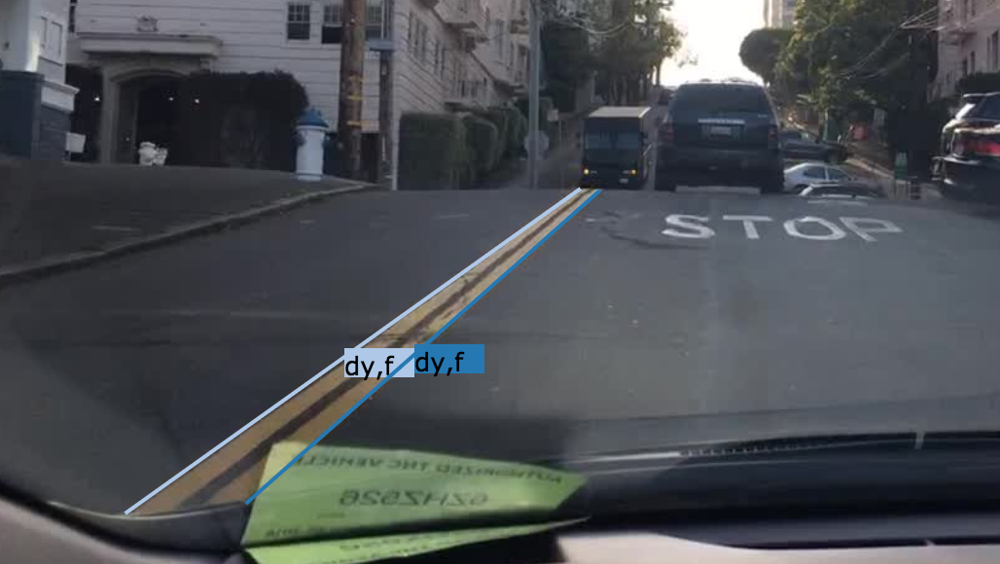
As for those dashed lines, don't forget to set their attributes to "dashed", and you can annotate the dotted parts as a whole.
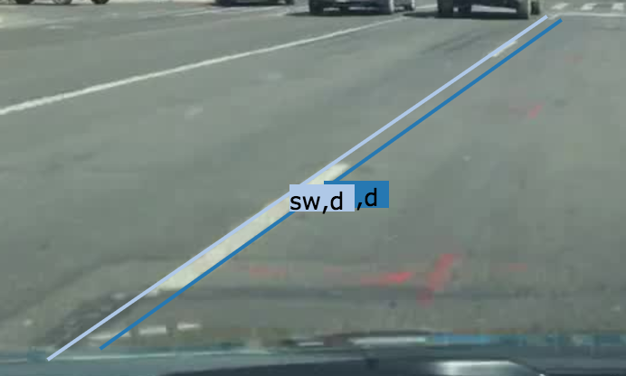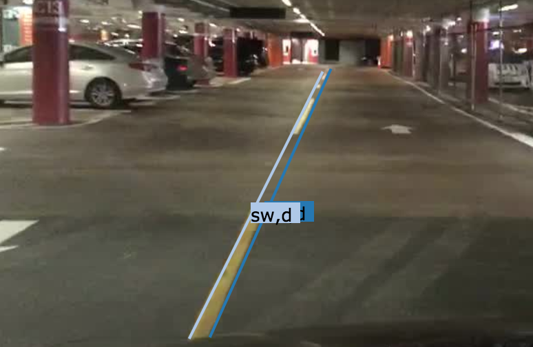
As for crosswalks, you should annotate the dashed sides, and set the attributes to "dashed" and "vertical".
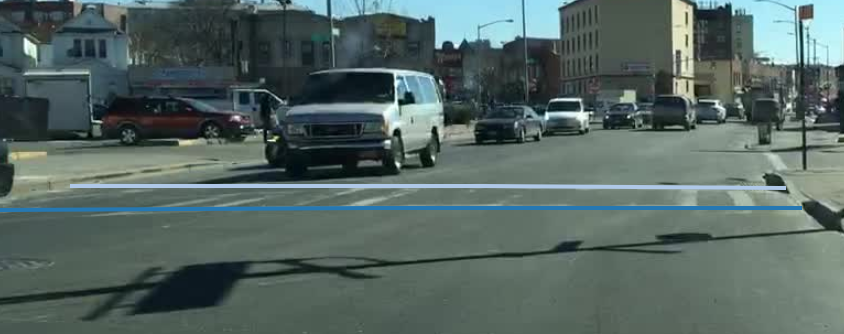
Basic Options
The mode transition can be described in this image:

1. Click next button ">>" to work on the next image and click "<<" to go back to the previous one. You can not submit your task before you finish the last image.
2. When you finish your task, click the button "Submit" on top right and your submission will be stored.
3. Click "Hide Label" button (or press "L(l)") in the control box to hide categories of lines. Click/press it again to show.
4. Select an annotated line by Double Click, and Double Click the background image to cancel selection. You can change the selection by double click other line. Once a line is selected, you can change its category, resize or delete. DO NOT USE SINGLE CLICK TO SELECT, or you will draw a new line.
5. Move your mouse onto a vertex, when it turns bigger and green, then press "ESC" or "DELETE" to delete a vertex. Otherwise, the deletion is invalid. You can also press "ESC" to remove the whole object that you are drawing, and use "DELETE" to remove a latest vertex.
6. Move your mouse onto a midpoint of one straight edge, when it turns bigger and orange, press "B(b)" to change this edge to a Bezier Curve. You can drag the control points to adjust its shape.
7. If points are too dense and annoying, press "H(h)" to hide midpoints when hovering on a line.
8. Click "+/-" or press PageUp/PageDown to zoom.
Draw
1. You can draw a polyline using many single clicks. The positions of your clicks form the vertices.
2. When you want to finish drawing, move your mouse to the first vertex (where you started). You will notice the it becomes green and bigger, then make a click right there and your drawing will be finished.
Resize and Add New Vertex
Resize
1. You can drag vertices to resize a line's shape. When you move your mouse onto a vertex, it will turn green and bigger. If your mouse leaves, it will recover. So try not to move your mouse after seeing this phenomenon.
2. Make a click on "the big green vertex" but keep your mouse down; and then drag the vertex to where you want.
Add Vertex
1. When you hover onto a line, some other points (not only the vertices) are shown. They are midpoints. We will use midpoints to support some operations related to edges.
2. When you hover onto a midpoint, it will be orange and bigger.
3. Make a click right on the "big orange midpoint", and drag the midpoint somewhere you want. It will become a new vertex, and create another 2 new midpoints. In this way you can add a vertex between any two vertices.
Change a Straight Edge to Bezier Curve
1. Hover onto the midpoint of the edge you want to change. Then press "B" or "b", a cubic Bezier curve will be created. If you want to figure out what is Bezier curve, you can view this:
What is Besize Curve2. But it's ok if you don't know anything about it. Your pressing will create a Bezier curve with 4 Bezier control points, they are in yellow: two endpoints of the edge and two new points between them.
3. You can hover on and drag these "Bezier control points" to change the shape of the curve. So that you can use it to annotate curves, such as curved lane.
4. Hover onto a "Bezier control point" and press "ESC" or "DELETE", you can change the curve back to straight edge.
This is a video on adding curves:
Select and Delete
Select
1. When you want to change the category of an annotated line, double click it. The color will change, which indicates a successful selection.
2. If you want to change the category, you can choose one in the toolbox. If you want to resize it, then "hover and drag" as described before. In selection mode, you can drag a vertex even it is occluded.
3. Double click the background image to cancel your selection.
Delete
1. If you want to delete your selection, press "DELETE" or click "delete" button.
2. When you want to delete what you are drawing (not finished, no close path formed), just simply press "ESC". As for deleting a vertex, hover on it, press "ESC" or "DELETE" after it turns bigger and green.
What's more:
1. Remember, the delete operation is irreversible.
2. You can not delete a midpoint (that's a ridiculous opration).
3. If you press "ESC" when your mouse is on a Bezier control point, the curve will recover to a straight edge.
4. The operations related with point are valid if and only if its shape changes.